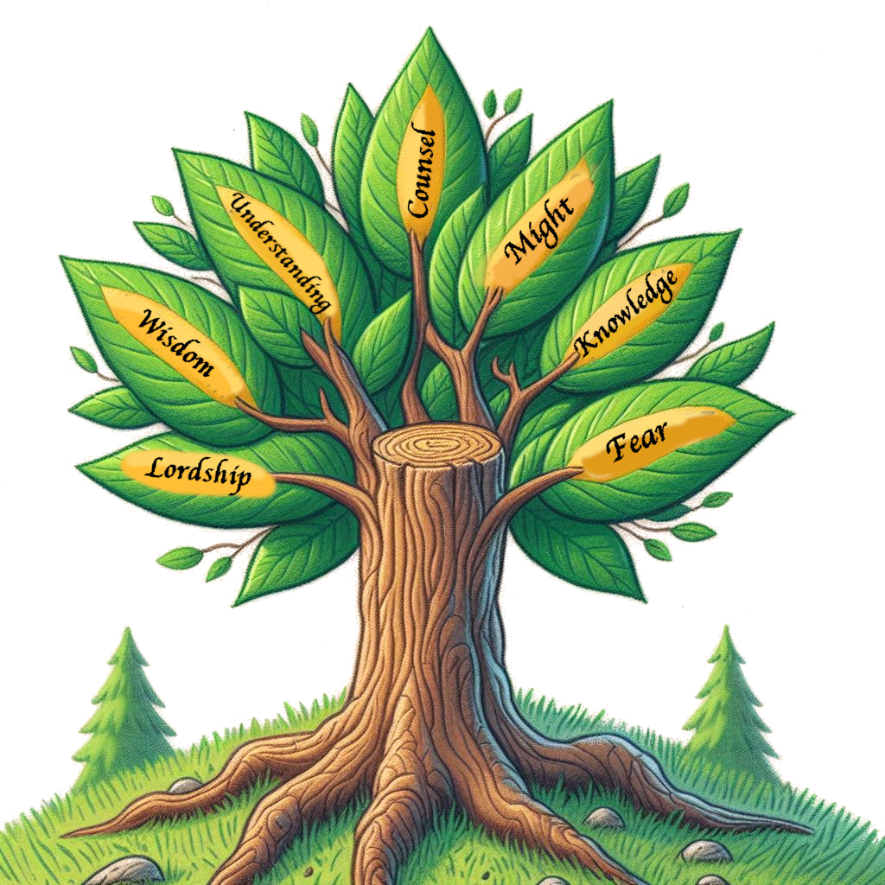

Theme of Spirits
Published on 2024-05-24

To recap, the seven spirits of God are named in Isaiah:
There shall come forth a shoot from the stump of Jesse,
and a branch from his roots shall bear fruit.
And the Spirit of (1) the Lord shall rest upon him,
the Spirit of (2) wisdom and
(3) understanding,
the Spirit of (4) counsel and
(5) might,
the Spirit of (6) knowledge and
(7) the fear of the Lord.
- Isaiah 11:1-2
Each of the Bible books that constitute the Seven Pillars of Wisdom exemplifies one of these spirits, though all seven appear in each.
Spirits
The tables and analysis for the preceding clues already connected many passages to the seven spirits. Here are a few more. These points solidify why each of the seven books that constitute the Seven Pillars of Wisdom is tied most closely to one of the spirits.
The Spirit of Lordship: Psalms
“The Lord” shows up in the Psalms 717 times, the most of any book in the Bible. Of the Psalms, it appears most often – twenty-four times – in Psalm 119, which prophesied the coming of the Lord.
What mercy God has showered upon us with these songs from the heart! Tyrants threaten and cajole, demanding undeserved fealty from oppressed subjects. Their call to respect their authority is full of commands and threats. Tyrants do not care how you feel, they care how you will work for them, enrich them and make their kingdom strong. The Lord is no tyrant. The Psalms are sweet with compassion and longing, flowing with humility and care for the brokenhearted. These songs woo you to a place of safety. They do not merely extol the lordship of a god, they show you the character of that lord and that character is firm but loving and kind.
Meditating on the Psalms long ago took away my nightmares. Our world is filled with nightmares. God sends the Spirit of the Lord to untangle your emotions, make you grow strong and make those nightmares cease.
The Spirit of Wisdom: Job
The climax of Job’s final speech is chapter 28. It is a mysterious hymn to wisdom. Since Solomon said that the heart of the Wise is in the House of Mourning, that makes Job, the book of mourning, the place where that heart beats strongest.
“But where shall wisdom be found?
And where is the place of understanding?"
- Job 28:12
Job lamented that not only did he not know the path to where wisdom may be found, nobody in this world did. Only God knows the way. How much we need and rejoice in this spirit! God has sent out the Spirit of Wisdom into the world. If you welcome it when it visits, that spirit will show you the way.
The Spirit of Understanding: Proverbs
Forty-three occurrences of the word understanding appear in Proverbs, the most of any book. Proverbs 8 demonstrates that understanding by listing the attributes of all seven spirits:
“I, wisdom, dwell with prudence,
and I find knowledge and discretion.
The fear of the LORD is hatred of evil.
Pride and arrogance and the way of evil
and perverted speech I hate.
I have counsel and sound wisdom;
I have insight (aka understanding); I have strength.
By me kings reign, and rulers decree what is just;
by me princes rule, and nobles, all who govern justly.
I love those who love me,
and those who seek me diligently find me.
Riches and honor are with me,
enduring wealth and righteousness.
My fruit is better than gold, even fine gold,
and my yield than choice silver.
I walk in the way of righteousness,
in the paths of justice,
granting an inheritance to those who love me,
and filling their treasuries.
“The LORD possessed me at the beginning of his work,
the first of his acts of old."
- Proverbs 8:12-22
Did you know that Lady Wisdom had a roommate? Her name is Prudence. Wisdom is never alone.
The Spirit of Counsel: Song of Songs
The most occurrences of counsel are found in Isaiah, eighteen in all. Isaiah is the prophet who lists the seven spirits of God in canonical order. Song of Songs has five "adjure" statements: 2:7; 3:5; 5:8,9; 8:4. The book counsels people to learn by patience God’s timing for how to best approach life. Song of Songs speaks to the heart and the emotions.
What is that coming up from the wilderness
like columns of smoke,
perfumed with myrrh and frankincense,
with all the fragrant powders of a merchant?
...
He made its posts of silver,
its back of gold, its seat of purple;
its interior was inlaid with love
by the daughters of Jerusalem.
- Song of Songs 3:6,10
Some translations use "pillars of smoke" instead of "columns of smoke". This recalls the Pillar of Cloud that guided the Israelites by day during their time wandering in the wilderness. That pillar guided the people in safety and to safety. In this love poem, what does this guided one possess? Gold, frankincense and myrrh! Those are the gifts that the wise men from the east brought to Jesus. Normally, it is wise people who give the advice. However, remember the angel that told the wise men to return to their own country by a different route because King Herod wanted to kill the baby? It was the wise men who were the guided ones. Part of being wise is knowing when to listen to the wise counsel of others.
The Spirit of Might: Ecclesiastes
This book is about action, about planning and doing. Ecclesiastes 9:10,16 are about might and fall at the defining part of the book.
“Whatever your hand finds to do, do it with your might, for
there is no work or thought or knowledge or wisdom in Sheol,
to which you are going… But I say that
wisdom is better than might, though the poor man's wisdom
is despised and his words are not heard.“
(Note again the pairing of knowledge and wisdom!)
The Spirit of Knowledge: Matthew
As Colossians 2:3 says, in Jesus are found all the treasures of wisdom and knowledge. In many (but not all) of the passages in the Bible where the seven spirits are given in order schematically, two spirits are emphasized by having the word gold appear in their passages (or some other distinguishing phrase). Those two spirits are wisdom and knowledge. Wisdom is borne from suffering, matching Christ’s first coming, while knowledge is the hallmark of the final harvest, Christ’s second coming.
The Son of Man came eating and drinking, and they say,
‘Look at him! A glutton and a drunkard,
a friend of tax collectors and sinners!’
Yet wisdom is justified by her deeds.
- Matthew 11:19 ESV
The queen of the South will rise up at the judgment with this
generation and condemn it, for she came from the ends of the earth
to hear the wisdom of Solomon, and behold, something greater than
Solomon is here.
Matthew 12:42 ESV
And when Jesus had finished these parables, he went away from
there, and coming to his hometown he taught them in their
synagogue, so that they were astonished, and said,
“Where did this man get this wisdom and these mighty works?"
- Matthew 13:53-54 ESV
Now we know that you know all things and do not need anyone to
question you; this is why we believe that you came from God.
- John 16:30 ESV
Matthew is about Jesus and Jesus knows all things. QED.
The Spirit of the Fear of the Lord: Revelation
The final book of the Bible does not speak of the fear the Lord as often as Psalms, Proverbs or the prophets. It just causes it. After I left the Catholic church, reading this book was the first step on my journey back to God, and it terrified me. It did its job well.
Here are links to the sections on all seven themes common between the books that constitute the Seven Pillars of Wisdom: